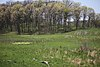

grassland

Definition: A grassland is an area where the vegetation is dominated by grasses (Poaceae). However, sedge (Cyperaceae) and rush (Juncaceae) can also be found along with variable proportions of legumes, like clover, and other herbs. Grasslands occur naturally on all continents except Antarctica and are found in most ecoregions of the Earth. Furthermore, grasslands are one of the largest biomes on earth and dominate the landscape worldwide. There are different types of grasslands: natural grasslands, semi-natural grasslands, and agricultural grasslands. They cover 31–69% of the Earth's land area.
Source: Wikipedia
Wikipedia Page
Wikidata Page
Occurs in: